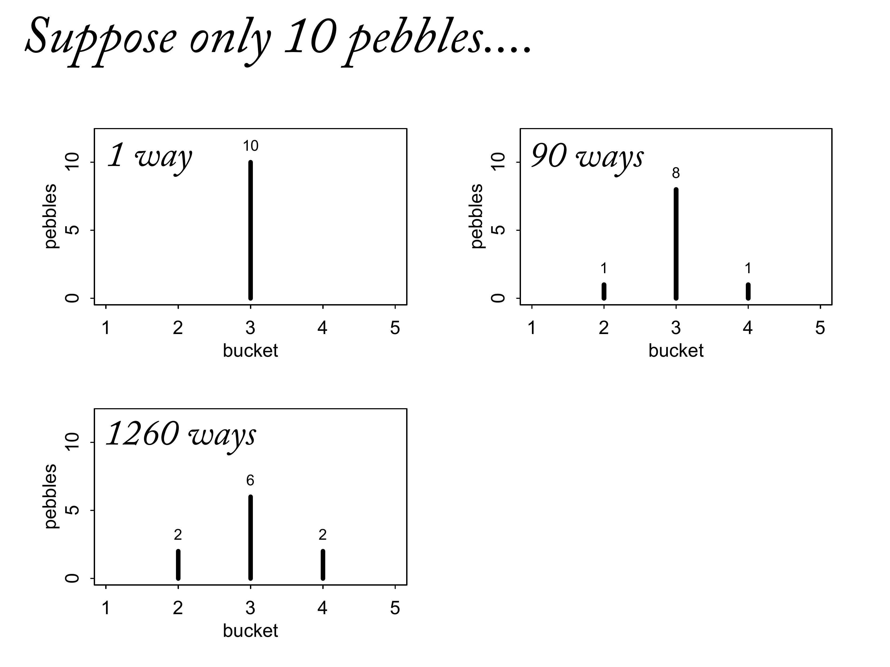

10.1 Maximum entropy
Maximum entropy principle:
The distribution that can happen the most ways is also the distribution with the biggest information entropy. The distribution with the biggest entropy is the most conservative distribution that obeys its constraints.

Imagine you have buckets equidistant from you. At your feet you have 100 pebbles, each painted with a number. Unique pebbles.
What happens when we toss pebbles one at a time into the buckets at random. Eventually all 100 pebbles end up in the buckets, and you count them, and you get a distribution of pebbles. What types of distributions are really common, and what types are really rare?
Think about extreme distributions first. There’s only 1 way to get all 100 pebbles in bucket 1.
Same with bucket 5. So there are 5 unique distributions with all pebbles in a single bucket.
There are a bunch of distributions that will happen in a bunch of different ways. We could take a pebble from bucket 2 and swap it with one from bucket 3. How many ways could you get the same distribution. This very problem is the basis of Bayesian inference. Some distributions can arise in many more ways. It’s a principle called Maximum Entropy, and it justifies Bayesian inference.

We can replace the integers with \(n\)s. In some point, you learned that there’s a formula for the number of arrangements of the pebbles.

This is called the multiplicity. It’s the foundation of statistical inference. It gets big really fast when the Ns get equal.
Let’s put each distribution of pebbles in a list:
d <-
tibble(a = c(0, 0, 10, 0, 0),
b = c(0, 1, 8, 1, 0),
c = c(0, 2, 6, 2, 0),
d = c(1, 2, 4, 2, 1),
e = 2) And let’s normalize each such that it is a probability distribution.
# this is our analogue to McElreath's `lapply()` code
d %>%
mutate_all(~ . / sum(.)) %>%
# the next few lines constitute our analogue to his `sapply()` code
pivot_longer(everything(), names_to = "plot") %>%
group_by(plot) %>%
summarise(h = -sum(ifelse(value == 0, 0, value * log(value))))## # A tibble: 5 × 2
## plot h
## <chr> <dbl>
## 1 a 0
## 2 b 0.639
## 3 c 0.950
## 4 d 1.47
## 5 e 1.61Since these are now probability distributions, we can compute the information entropy of each as above.
So distribution E, which can realized by far the greatest number of ways, also has the biggest entropy.
library(ghibli)
ghibli_palette("MarnieMedium1")[1:7]## [1] "#28231DFF" "#5E2D30FF" "#008E90FF" "#1C77A3FF" "#C5A387FF" "#67B8D6FF"
## [7] "#E9D097FF"Only one way to get all the pebbles in bucket 3.

How many ways to get the second distribution?
It’s massively bigger. This will accelerate. People have really bad intuitions regarding combinatorics.
Now we’ve got two in bucket 2. Now we’re getting an order of magnitude increase.



General principle: Distributions that are flat can happen in many many more ways. And this is why we bet on them. They have high entropy. Flat distributions are closer, less surprised when the distribution turns out to be different. Then become really good foundations for statistical inference, because they distribute the possibilities as widely as possible.
This is a unique way to derive the formula. It’s nothing more than the multiplicity. W is the multiplicity (number of ways to get the N). Then we’ve normalised it across the number of the pebbles. And that turns out to be a good approximation. Information entropy is just the logarithm of the number of ways to realise a distribution. And it’s maximised when the distribution is flat. And flatter distributions have higher entropy.

Most centrally associated with Jaynes. If you choose any other distribution to characterise your state of knowledge, you will be implicitly adding other information into your distribution. So if you lay out all the constraints, then solve for the distribution that’s as flat as possible under those constraints, you do the best you possibly can. You’re honestly characterising your ignorance.
![Lots of conceptual examples for. What is the information content of a prior distribution? It turns out that Bayesian updating is a special case of this principle. You can input the data as constraints, and you get the posterior distribution by solving the maximum entropy problem. High entropy is good because the distance from the truth is smaller. One way to thing about it is it's deflationary. No matter what happens, and even distrubtion is bound to arise. We put in a tiny sliver of scientific information in our model, and the rest we just bet on entropy.](slides/L11/20.png)
Lots of conceptual examples for. What is the information content of a prior distribution? It turns out that Bayesian updating is a special case of this principle. You can input the data as constraints, and you get the posterior distribution by solving the maximum entropy problem. High entropy is good because the distance from the truth is smaller. One way to thing about it is it’s deflationary. No matter what happens, and even distrubtion is bound to arise. We put in a tiny sliver of scientific information in our model, and the rest we just bet on entropy.

Motivates forward to other distributions. If we’re going to maximise this function, if all the \(p\)s are equal, they’re highest. Sometimes there are constrants that prevent us from making the \(p\)s equal. What kind of constraints? Known mean or variance.

This is actually what we did in Week 1. Shows that it’s just counting.

Under some set of constraints, the distributions we use are maximum entropy distributions. Exponential distributions used for scale. They have a very clear maxent constraint. If a parameter is non-negative real, and has some mean value, then the exponential contains only that information.
10.1.1. Gaussian
To appreciate why the Gaussian shape has the biggest entropy for any continuous distribution with this variance, consider that entropy increases as we make a distribution flatter. So we could easily make up a probability distribution with larger entropy than the blue distribution in Figure 10.2: Just take probability from the center and put it in the tails. The more uniform the distribution looks, the higher its entropy will be. But there are limits on how much of this we can do and maintain the same variance, \(\sigma^2 = 1\).
Then the Gaussian distribution gets its shape by being as spread out as possible for a distribution with fixed variance.
10.1.2. Binomial
# data
d <-
tibble(distribution = letters[1:4],
ww = c(1/4, 2/6, 1/6, 1/8),
bw = c(1/4, 1/6, 2/6, 4/8),
wb = c(1/4, 1/6, 2/6, 2/8),
bb = c(1/4, 2/6, 1/6, 1/8))
# table
d %>%
mutate_if(is.numeric, ~MASS::fractions(.) %>% as.character()) %>%
flextable::flextable()distribution | ww | bw | wb | bb |
a | 1/4 | 1/4 | 1/4 | 1/4 |
b | 1/3 | 1/6 | 1/6 | 1/3 |
c | 1/6 | 1/3 | 1/3 | 1/6 |
d | 1/8 | 1/2 | 1/4 | 1/8 |
Compute the entropy of each distribution:
d <-
d %>%
pivot_longer(-distribution,
names_to = "sequence",
values_to = "probability") %>%
mutate(sequence = factor(sequence, levels = c("ww", "bw", "wb", "bb")))
d %>%
ggplot(aes(x = sequence, y = probability, group = 1)) +
geom_point(size = 2, color = ghibli_palette("PonyoMedium")[4]) +
geom_line(color = ghibli_palette("PonyoMedium")[5]) +
labs(x = NULL, y = NULL) +
coord_cartesian(ylim = 0:1) +
theme(axis.ticks.x = element_blank(),
panel.background = element_rect(fill = ghibli_palette("PonyoMedium")[2]),
panel.grid = element_blank(),
strip.background = element_rect(fill = ghibli_palette("PonyoMedium")[6])) +
facet_wrap(~ distribution)Figure 10.3
d %>%
# `str_count()` will count the number of times "b" occurs within a given row of `sequence`
mutate(n_b = str_count(sequence, "b")) %>%
mutate(product = probability * n_b) %>%
group_by(distribution) %>%
summarise(expected_value = sum(product))## # A tibble: 4 × 2
## distribution expected_value
## <chr> <dbl>
## 1 a 1
## 2 b 1
## 3 c 1
## 4 d 1d %>%
group_by(distribution) %>%
summarise(entropy = -sum(probability * log(probability)))## # A tibble: 4 × 2
## distribution entropy
## <chr> <dbl>
## 1 a 1.39
## 2 b 1.33
## 3 c 1.33
## 4 d 1.21The binomial with this expected value is:
p <- 0.7
(
a <-
c((1 - p)^2,
p * (1 - p),
(1 - p) * p,
p^2)
)## [1] 0.09 0.21 0.21 0.49This distribution is definitely not flat. So to appreciate how this distribution has maximum entropy—is the flattest distribution with expected value 1.4—we’ll simulate a bunch of distributions with the same expected value and then compare entropies. The entropy of the distribution above is just:
-sum(a * log(a))## [1] 1.221729So if we randomly generate thousands of distributions with expected value 1.4, we expect that none will have a larger entropy than this.
We can use a short R function to simulate random probability distributions that have any specified expected value. The code below will do the job. Don’t worry about how it works (unless you want to).
sim_p <- function(seed, g = 1.4) {
set.seed(seed)
x_123 <- runif(3)
x_4 <- ((g) * sum(x_123) - x_123[2] - x_123[3]) / (2 - g)
z <- sum(c(x_123, x_4))
p <- c(x_123, x_4) / z
tibble(h = -sum(p * log(p)),
p = p,
key = factor(c("ww", "bw", "wb", "bb"), levels = c("ww", "bw", "wb", "bb")))
}sim_p(seed = 9.9, g = 1.4)## # A tibble: 4 × 3
## h p key
## <dbl> <dbl> <fct>
## 1 1.02 0.197 ww
## 2 1.02 0.0216 bw
## 3 1.02 0.184 wb
## 4 1.02 0.597 bb# how many replications would you like?
n_rep <- 1e5
d <-
tibble(seed = 1:n_rep) %>%
mutate(sim = map2(seed, 1.4, sim_p)) %>%
unnest(sim)
head(d)## # A tibble: 6 × 4
## seed h p key
## <int> <dbl> <dbl> <fct>
## 1 1 1.21 0.108 ww
## 2 1 1.21 0.151 bw
## 3 1 1.21 0.233 wb
## 4 1 1.21 0.508 bb
## 5 2 1.21 0.0674 ww
## 6 2 1.21 0.256 bwLet’s split out the entropies and distributions, so that it’s easier to work with them.
Now we can ask what the largest observed entropy was:
ranked_d <-
d %>%
group_by(seed) %>%
arrange(desc(h)) %>%
ungroup() %>%
# here's the rank order step
mutate(rank = rep(1:n_rep, each = 4))
head(ranked_d)## # A tibble: 6 × 5
## seed h p key rank
## <int> <dbl> <dbl> <fct> <int>
## 1 55665 1.22 0.0903 ww 1
## 2 55665 1.22 0.209 bw 1
## 3 55665 1.22 0.210 wb 1
## 4 55665 1.22 0.490 bb 1
## 5 71132 1.22 0.0902 ww 2
## 6 71132 1.22 0.210 bw 2subset_d <-
ranked_d %>%
# I arrived at these `rank` values by trial and error
filter(rank %in% c(1, 87373, n_rep - 1500, n_rep - 10)) %>%
# I arrived at the `height` values by trial and error, too
mutate(height = rep(c(8, 2.25, .75, .5), each = 4),
distribution = rep(letters[1:4], each = 4))
head(subset_d)## # A tibble: 6 × 7
## seed h p key rank height distribution
## <int> <dbl> <dbl> <fct> <int> <dbl> <chr>
## 1 55665 1.22 0.0903 ww 1 8 a
## 2 55665 1.22 0.209 bw 1 8 a
## 3 55665 1.22 0.210 wb 1 8 a
## 4 55665 1.22 0.490 bb 1 8 a
## 5 50981 1.00 0.0459 ww 87373 2.25 b
## 6 50981 1.00 0.0459 bw 87373 2.25 bp1 <-
d %>%
ggplot(aes(x = h)) +
geom_density(size = 0, fill = ghibli_palette("LaputaMedium")[3],
adjust = 1/4) +
# note the data statements for the next two geoms
geom_linerange(data = subset_d %>% group_by(seed) %>% slice(1),
aes(ymin = 0, ymax = height),
color = ghibli_palette("LaputaMedium")[5]) +
geom_text(data = subset_d %>% group_by(seed) %>% slice(1),
aes(y = height + .5, label = distribution)) +
scale_x_continuous("Entropy", breaks = seq(from = .7, to = 1.2, by = .1)) +
theme(panel.background = element_rect(fill = ghibli_palette("LaputaMedium")[7]),
panel.grid = element_blank())p2 <-
ranked_d %>%
filter(rank %in% c(1, 87373, n_rep - 1500, n_rep - 10)) %>%
mutate(distribution = rep(letters[1:4], each = 4)) %>%
ggplot(aes(x = key, y = p, group = 1)) +
geom_line(color = ghibli_palette("LaputaMedium")[5]) +
geom_point(size = 2, color = ghibli_palette("LaputaMedium")[4]) +
scale_y_continuous(NULL, breaks = NULL, limits = c(0, .75)) +
xlab(NULL) +
theme(axis.ticks.x = element_blank(),
panel.background = element_rect(fill = ghibli_palette("LaputaMedium")[7]),
panel.grid = element_blank(),
strip.background = element_rect(fill = ghibli_palette("LaputaMedium")[6])) +
facet_wrap(~ distribution)
# combine and plot
library(patchwork)
p1 | p2Figure 10.4
ranked_d %>%
group_by(key) %>%
arrange(desc(h)) %>%
slice(1)## # A tibble: 4 × 5
## # Groups: key [4]
## seed h p key rank
## <int> <dbl> <dbl> <fct> <int>
## 1 55665 1.22 0.0903 ww 1
## 2 55665 1.22 0.209 bw 1
## 3 55665 1.22 0.210 wb 1
## 4 55665 1.22 0.490 bb 1And that’s almost exactly \({0.09, 0.21, 0.21, 0.49}\), the distribution we calculated earlier. The other distributions in Figure 10.4—B, C, and D—are all less even than A.
There is no guarantee that the maximum entropy distribution is the best probability distribution for the real problem you are analyzing. But there is a guarantee that no other distribution more conservatively reflects your assumptions.
That’s not everything, but nor is it nothing. Any other distribution implies hidden constraints that are unknown to us, reflecting phantom assumptions. A full and honest accounting of assumptions is helpful, because it aids in understanding how a model misbehaves. And since all models misbehave sometimes, it’s good to be able to anticipate those times before they happen, as well as to learn from those times when they inevitably do.
Rethinking: Conditional independence
What is usually meant by “independence” in a probability distribution is just that each observation is uncorrelated with the others, once we know the corresponding predictor values.